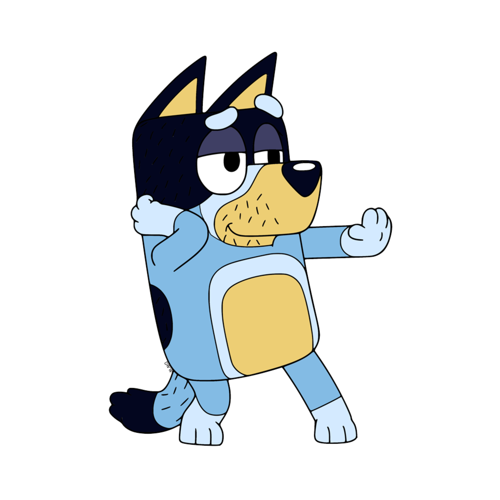
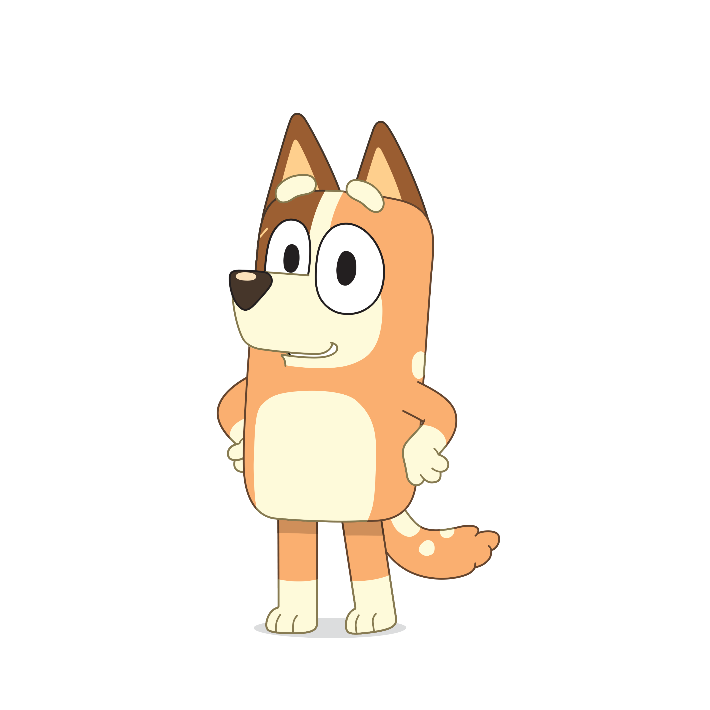
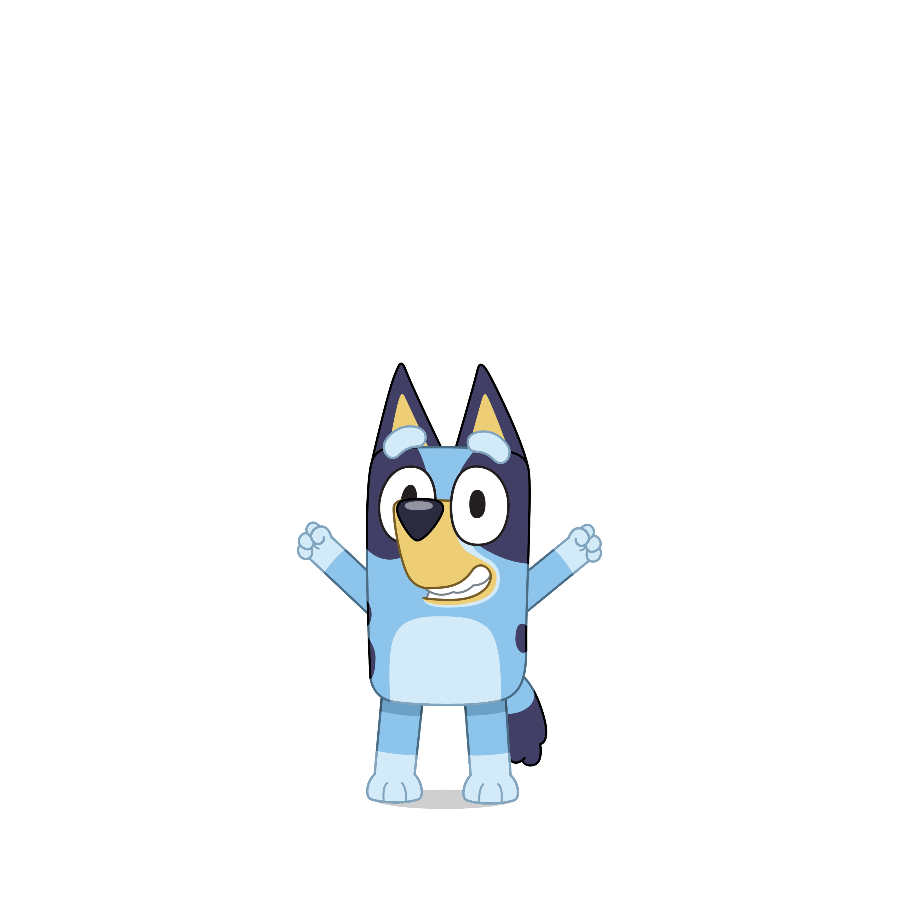
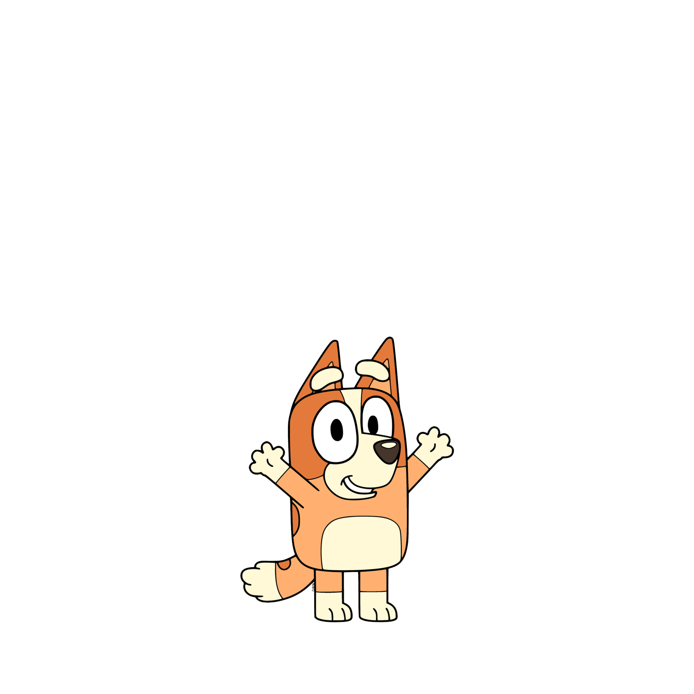

Bluey's Family
Bluey lives with her family in Brisbane, Australia. Her family includes:

Bandit
Bluey's dad, a playful and loving father who enjoys spending time with his daughters.

Chilli
Bluey's mum, a caring and supportive mother who balances work and family life.

Bluey
The main character, a 6-year-old Blue Heeler puppy who loves to play and explore.

Bingo
Bluey's younger sister, who is often seen playing alongside Bluey in their adventures.